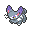

7月24日
【ORASトリプル】トリプルでもガオガエンが使いたいのでゴウカザルをガオガエンにした【反省会】
ボーマンダ＠メガストーン（いかく）
すてみタックル／ハイパーボイス／おいかぜ／まもる
バンギラス＠こだわりハチマキ（すなおこし）
いわなだれ／かみくだく／ばかぢから／アイアンヘッド
ドリュウズ＠いのちのたま（すなかき）
じしん／アイアンヘッド／いわなだれ／まもる
モロバレル＠ゴツゴツメット（さいせいりょく）
キノコのほうし／いかりのこな／エナジーボール／ヘドロばくだん
ゴチルゼル＠オボンのみ（かげふみ）
サイコキネシス／いやしのはどう／よこどり／トリックルーム
ゴウカザル＠とつげきチョッキ（もうか）
ねこだまし／フレアドライブ／インファイト／とんぼがえり
ぽけっとふぁんくしょん！経緯
ガオガエン は7世代で登場した、ほのお・あくタイプのポケモン。
は7世代で登場した、ほのお・あくタイプのポケモン。特性いかく+炎悪の優秀な耐性+高めの耐久+蜻蛉返りで安定したサイクルを回せ、サイクルの途中で相手のスキを見て猫騙し+味方の何かで〆に持っていける凶悪なポケモンです。
しかし6世代であるORASトリプルには当然ガオガエンはいないのでガオガエンをトリプルで使うことはできない…
というわけで、ガオガエンに似た性能のポケモンで代用するにしました。
まずガオガエンの一番重要な要素である猫騙しと蜻蛉返りなどの交換技を両立できて強そうなポケモンを調べてみました。
ブニャット H71-A82-B64-C64-D59-S112 (蜻蛉返り、厚い脂肪)
コジョンド H65-A125-B60-C95-D60-S105 (蜻蛉返り、再生力)
ライチュウ H60-A90-B55-C90-D80-S110 (ボルトチェンジ、避雷針)
ゴウカザル H76-A104-B71-C104-D71-S108 (蜻蛉返り、猛火)
バリヤード H40-A45-B65-C100-D120-S90 (バトンタッチ、ぼうおん、フィルター)
ガオガエン
H95-A115-B90-C80-D90-S60 (蜻蛉返り、威嚇)いやみんなガオガエンと比べて耐久が低すぎるし素早さが早すぎる… いかにガオガエンが優秀で画期的なポケモンだったのかがわかりますね。
とりあえず総合的な耐久や炎の耐性を評価してゴウカザルを使うことにしました。
次に相性の良さそうなメガシンカを考えてみます。
終盤に猫騙し+S操作で一気に畳み掛ける動きが強力なのでS操作がほしい、ゴウカザルは威嚇を持ってないので威嚇がほしいということからメガボーマンダ
 をピックアップ。
をピックアップ。メガボーマンダでサイクルに向いた構築がないかと調べたら、バンドリマンダがサイクルを使って戦う構築だと知り使ってみることに。
ボーマンダ＠メガストーン（いかく）
すてみタックル／ハイパーボイス／おいかぜ／まもる
バンギラス＠こだわりハチマキ（すなおこし）
いわなだれ／かみくだく／ばかぢから／アイアンヘッド
ドリュウズ＠いのちのたま（すなかき）
じしん／アイアンヘッド／いわなだれ／まもる
モロバレル＠ゴツゴツメット（さいせいりょく）
キノコのほうし／いかりのこな／エナジーボール／ヘドロばくだん
ゴチルゼル＠オボンのみ（かげふみ）
サイコキネシス／いやしのはどう／よこどり／トリックルーム
ゴウカザル＠とつげきチョッキ（もうか）
ねこだまし／フレアドライブ／インファイト／とんぼがえり
ぽけっとふぁんくしょん！個別解説
ボーマンダとゴウカザル以外はトリプルバトルwikiでも紹介されているバンドリマンダゴチルと同じなので個別解説は省略します。メガボーマンダ＠メガストーン（スカイスキン・せっかち）
179(68)-165( )-135( )-140( )-142(252)-179(180)
すてみタックル／ハイパーボイス／おいかぜ／まもる
ぽけっとふぁんくしょん！D:控えめルンパッパの冷凍ビーム最高乱数以外耐え
S:メガ前最速91族(霊獣ランドロス)抜き、メガ後最速111族(ボルトロス)抜き
パメラ氏のDS振りせっかちメガボーマンダを参考にしました。
ハイパーボイスでの相手全体を削れる性能と捨て身タックルで単体攻撃の火力を両立しているのが魅力的な型。
素早さに関してはメガボーマンダの時点では過剰に見えますが、初ターンの通常ボーマンダの時に通常ガルーラを抜いて圧力をかけれるのが大事です。
性格で下げた防御はそれでも高いレベルなので問題なかったです。
しかし、特防に関しては過剰というべきか、参考元の記事の7世代と比べて特殊火力がデフレ気味で、 氷技やフェアリー技を受けるのはその時点で立ち回りがダメなので、 HPに回して捨て身タックルの反動ダメを抑えたほうが良かったのではと感じました。
また臆病CSでさえ足りないと言われるハイパーボイスの火力が更に下がってるのでその点も問題でした。 特にバンドリにとってキツいランドロスが全く削れないのは致命的でした…
ゴウカザル＠とつげきチョッキ（もうか・しんちょう）
183(252)-124( )-92(4)-110( )-135(252)-128( )
ねこだまし／フレアドライブ／インファイト／とんぼがえり
ぽけっとふぁんくしょん！元の構築のハリテヤマと差し替え。
前述したジェネリックガオガエンとしての役割と、格闘タイプとしての役割を任せています。
ハリテヤマ・カポエラーなどと比べて強かった点
弱かった点
カポエラーやハリテヤマの劣化ということもなく、猫騙し持ちの硬めの格闘としては案外悪くない性能をしていました。
しかし重要な問題が…
問題点
とんぼがえりを使う機会がないはい。当初のコンセプト崩壊です。
蜻蛉返りを使うより猫騙しや攻撃技で火力出していったほうが強い！となってなかなか使う機会がありませんでした。
なぜ蜻蛉返りを使う機会がなかったのか
ちょっと考えたのですがこれが難しかったです。一応考えの1つとして、バンドリマンダ自体が実際はサイクル向けではないからなのでは？ということがあります。
自分の中ではサイクルというのは役割論理(攻撃重視の役割理論)的な、ヒードランと霊獣ランドロスをひたすら出し入れしてアドを取るイメージだったのですが、 実際にバンドリマンダを使ってみるとモロバレルや猫騙しなどを駆使して耐久は低めなドリュウズやバンギラスをうまく着地させて対面で有利を取れるようにする、 ということが多く、自分のイメージするサイクルとは違う(対面構築?)と感じました。
ゴウカザル(ガオガエン)を使うのならランドロスやヒードランが入ってるようなもっとガチガチのサイクル構築の方が良かったのではと思います。
今回は反省会となりましたが、HDチョッキゴウカザルの使い勝手は悪くなかったのでもうちょっと他の構築を触ってみてからリベンジしたいなと思いました。
(追記)
この後色々指摘されて考えた結果、やはりそもそもゴウカザルの耐久の低さと、ゴウカザルでとんぼがえりさせてもデバフも火力も何もなくて負担がかからない というのが一番ダメなのでは？という結論に辿り着きました。猫蜻蛉だけで強いなら剣盾のゴリランダーも猫蜻蛉型が多いのに実際はそうではないのが証明ですね…
うーんやはりガオガエンは偉大…
質問やはこちらまでお願いします。 Twitter マシュマロ